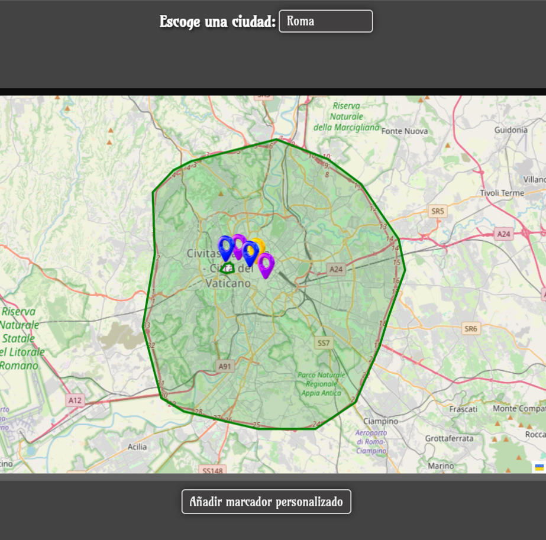
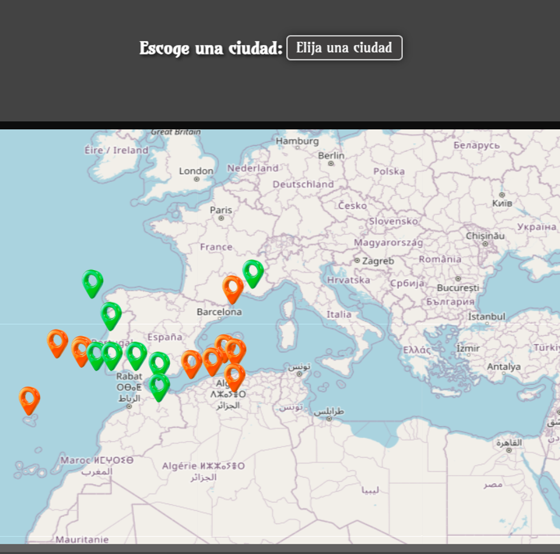
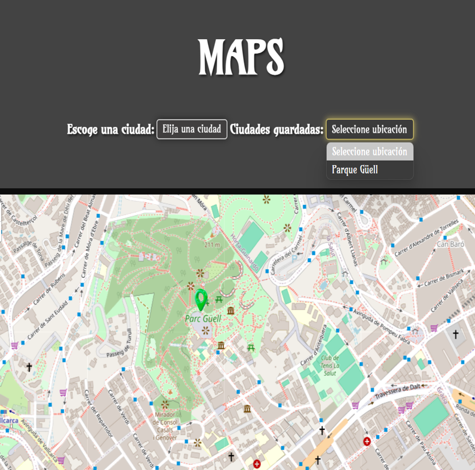

Maps Project (HTML, CSS and JavaScript)
Maps Project is a web application that uses OpenStreetMap along with the Leaflet library to display interactive maps. During development, custom HTML structures, JavaScript scripts, and CSS styles were created. The main goal was to show different maps based on the city selected by the user, and allow personalized markers to be added to the map.
Main features:
- Access to points of interest for predefined cities.
- Add points of interest by category.
- Visualize earthquakes by magnitude level with different colored markers.
This is how Maps looks



